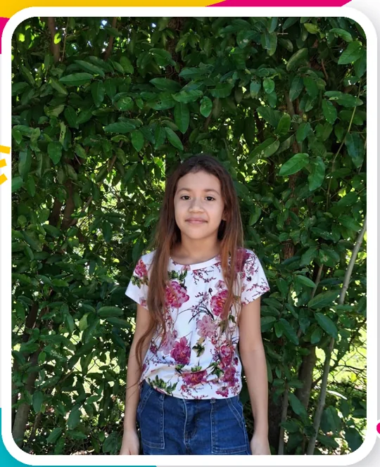
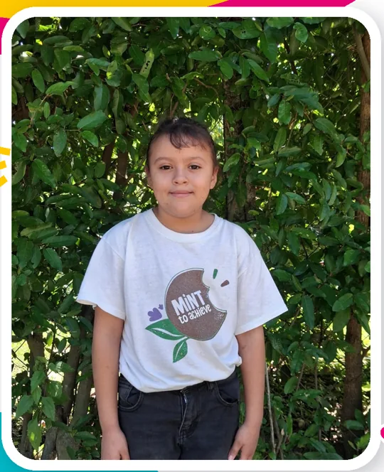
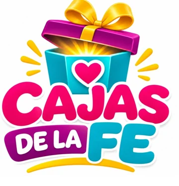

01
🧸
Elige a un niño
Revisa su edad, gustos y tallas. Elige a quien te gustaría acompañar con un regalo.



Cajas de la Fe une a padrinos voluntarios con niños de nuestra comunidad de Villa Belén. Cada cajita lleva algo más grande que un juguete: cariño, esperanza y la alegría de saberse recordado.
Cada sonrisa tiene una historia. Descubre qué le gusta a cada niño y elige a quién te gustaría apadrinar.
Los botones abren WhatsApp con los datos del niño elegido. El apadrinamiento solo queda confirmado cuando el equipo de la iglesia te responda.
¡Solo tres pasos para regalar una sonrisa esta Navidad!
Revisa su edad, gustos y tallas. Elige a quien te gustaría acompañar con un regalo.
El botón prepara un mensaje con sus datos para que puedas consultar si aún está disponible.
Cuando el equipo confirme, prepara tu cajita y coordina la entrega a más tardar el 6 de diciembre.
Queremos que cada niño reciba un regalo preparado con el mismo cariño. Estas son las pautas para los padrinos confirmados:
Interactivo o educativo, pensado para su edad.
Consulta su talla en la ficha del niño.
Algo útil para su día a día.
Un mensaje y buenos deseos para 2027.
Antes de preparar tu regalo, conoce estos detalles. Queremos que cada caja llegue a tiempo y que todos los niños reciban un detalle preparado con amor.
El proyecto acompañará a 20 niños y niñas de la comunidad Villa Belén durante esta Navidad, con el apoyo de padrinos voluntarios de Iglesia Pacto y Bendición.
Un juguete interactivo o educativo como regalo principal, una prenda de vestir nueva y un accesorio escolar. Además, una carta escrita a mano con cariño y buenos deseos para 2027.
El presupuesto sugerido es de $15 a $20 por caja, para que todos reciban regalos de tamaño y valor semejantes. Si tienes dudas, consúltanos antes de comprar.
Utiliza una caja de cartón forrada con papel navideño. Por fuera coloca una tarjeta clara con el nombre completo del niño o niña para que podamos entregársela correctamente.
El botón de su ficha abre WhatsApp y prepara un mensaje para nuestro equipo. Enviar el mensaje no reserva ni confirma el apadrinamiento; te responderemos para indicarte la disponibilidad.
La fecha límite es el 6 de diciembre de 2026. El lugar y horario de recepción se coordinan directamente por WhatsApp. La fiesta y entrega a los niños está prevista para el 19 de diciembre.
Un detalle muy importante: la carta también es parte del regalo. Tus palabras pueden convertirse en uno de los recuerdos más bonitos de su Navidad.
Gracias por ayudar a que cada cajita llegue a tiempo y con mucho amor.
Fecha límite para entregar tu regalo al equipo organizador.
Celebración y entrega de las Cajas de la Fe.
Quizás para ti sea una caja. Para un niño puede ser un recuerdo que atesorará siempre.
Quiero conocer a los niños ↗